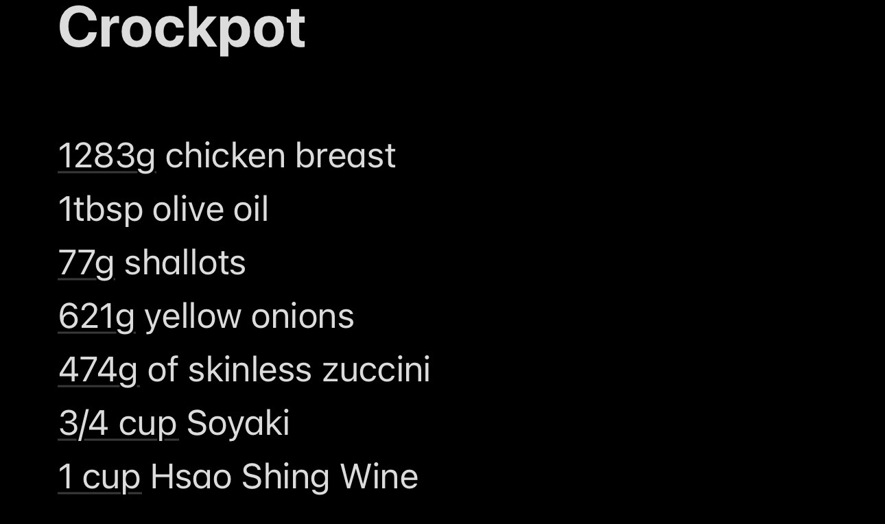
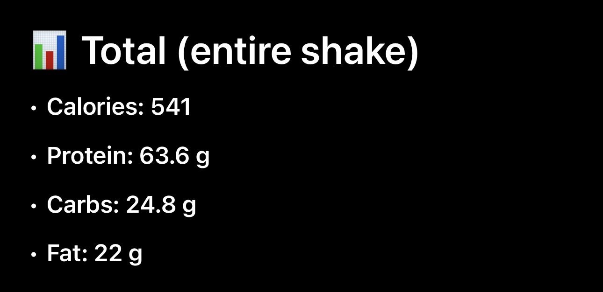

Inventory PageWeight Loss, Nutrition & Tracking Ontography
Introduction to the Inventory
Welcome to the Weight Loss & Nutrition Inventory. While my primary reviews focus on the specific pros, cons, and uses of individual items like the Lodge Dutch Oven and the Taylor Digital Kitchen Scale, it is equally important to understand the broader ecosystem of physical items required for a successful fitness and diet journey. This ontography gathers various items integral to home cooking, nutrition, and calorie counting to illustrate exactly what it takes to maintain consistency when trying to lose weight.
The purpose of this page is to make the abstract concept of "dieting" tangible. When we discuss meal prepping or tracking macros, what does that actually look like in a physical kitchen or on your phone? By examining these everyday foods, preparation tools, and digital logs, site users will learn to appreciate how environment and equipment shape our eating habits. You will see that weight loss does not just exist in sheer willpower, but in the specific physical items we use to fuel, prepare, and measure our bodies.
I have organized this inventory into two specific groups. The first group documents Dietary Components—the specific high-protein foods, carbs, and supplements that make up a sustainable diet. The second group focuses on Preparation & Tracking Tools, highlighting the cooking hardware, storage, and software needed to eliminate guesswork and track intake accurately. Through these images and their accompanying data, you will gain a new understanding of the practical setup required for sustainable weight management.
Group 1: Dietary Components & Supplements
The images in this group represent the array of nutritional building blocks found in a fitness-focused kitchen. From staple proteins like Greek yogurt and whey to essential carbs like oatmeal and noodles, each item serves a specific purpose in building a balanced, macro-friendly diet. The data below outlines the primary use and macronutrient focus of these items.


Nutrition Data
| Item | Primary Use | Macro Focus | Dietary Role |
|---|---|---|---|
| Protein Powder | Post-workout recovery | High Protein | Convenient supplement |
| Creatine | Strength & performance | N/A (Supplement) | Muscle energy storage |
| Greek Yogurt | Breakfast / Snacks | Protein & Fat | Satiety & probiotics |
| Milk | Base for shakes / recipes | Balanced (P/C/F) | Hydration & calories |
| Noodles | Carb source for meals | Carbohydrates | Quick energy |
| Soyaki Sauce | Marinade & flavoring | Low Calorie | Taste enhancement |
| Dessert | Cravings management | Variable | Diet sustainability |
| Oatmeal | Breakfast foundation | Complex Carbs | Sustained energy & fiber |
Group 2: Preparation & Tracking Tools
This second group documents the hardware and software used to prepare food and quantify progress. Whether it is slow-cooking bulk meals in a crockpot, dividing them into portioned containers, taking nutrition on the go, or logging the final numbers into an app, these items turn estimating into an exact science. The data table explains the format and specific tracking/prep purpose of these items.



Preparation & Tracking Data
| Tool | Primary Purpose | Format | Dietary Benefit |
|---|---|---|---|
| Crockpot | Batch cooking | Hardware (Kitchen) | Low-effort bulk meal preparation |
| Meal Prep Containers | Storage & isolation | Hardware (Storage) | Strict portion control for the week |
| Protein Shake | Liquid nutrition | Prepared Drink | On-the-go macro fulfillment |
| Tracking App | Data Logging | Software (Digital) | Calculates daily macros and calories accurately |